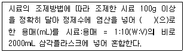
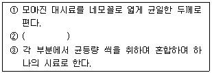
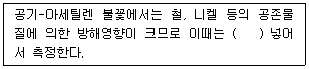
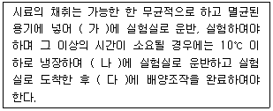
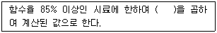
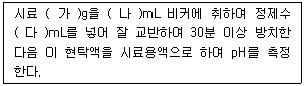
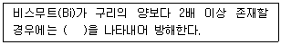
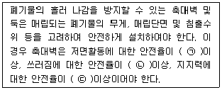
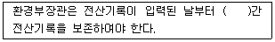
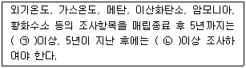

폐기물처리산업기사 (2015-03-08 기출문제)
1과목: 폐기물개론
1. 폐기물의 발생량 조사방법 중 전수조사의 장점이 아닌 것은?
- 조사기간이 짧다.
- 표본치의 보정역할이 가능하다.
- 행정시책에 대한 이용도가 높다.
- 표본오차가 작아 신뢰도가 높다.
(정답률: 88%)

2. 유해 폐기물을 소각할 때 발생하는 물질로서 광화학스모그의 원인이 되는 주된 물질은?
- 일산화탄소(CO)
- 염화수소(HCl)
- 일산화질소(NO)
- 이산화황(SO2)
(정답률: 65%)
3. 트롬멜 스크린에 대한 설명으로 옳지 않은 것은?
- [원통의 임계속도 × 1.45 = 최적속도]로 나타낸다.
- 원통의 경사도가 크면 부하율이 커진다.
- 스크린 중에서 선별효율이 좋고 유지관리상의 문제가 적다.
- 원통의 경사도가 크면 효율이 떨어진다.
(정답률: 82%)
4. 폐기물의 80%를 5cm 보다 작게 파쇄하고자 할 때 특성 입자 크기(Xo)는? (단, Rosin-Rammler 모델 기준, n=1)
- 약 3.1 cm
- 약 3.8 cm
- 약 4.2 cm
- 약 4.9 cm
(정답률: 41%)
5. 쓰레기 발생량 조사방법 중 주로 산업폐기물 발생량을 추산할 때 이용하는 방법으로 조사하고자 하는 계의 경계가 정확하여야 하는 것은?
- 물질수지법
- 직접계근법
- 적재차량 계수분석법
- 경향법
(정답률: 91%)
6. 수소 15.0%, 수분 0.4% 인 중유의 고위 발열량이 12,000kcal/kg 일 때, 저위발열량은?
- 11,188 kcal/kg
- 11,253 kcal/kg
- 11,324 kcal/kg
- 11,496 kcal/kg
(정답률: 67%)
7. 쓰레기의 발생량 예측 방법 중 최저 5년 이상의 과거 처리 실적을 바탕으로 예측하며 시간과 그에따른 쓰레기의 발생량 간의 상관관계만을 고려하는 방법은 무엇인가?
- WRAP 모델
- 경향법
- 다중회귀모델
- 동적모사모델
(정답률: 81%)
8. 다음 중 유해성이 있다고 판단할 수 있는 폐기물의 성질과 가장 거리가 먼 것은?
- 반응성
- 인화성
- 부식성
- 부패성
(정답률: 66%)
9. 쓰레기와 슬러지를 혼합하여 퇴비화 할 때의 장점이 아닌 것은?
- 쓰레기 단독으로 퇴비화 할 때보다 통기성이 좋다.
- 수분을 슬러지가 보충해 준다.
- 미생물의 접종 효과가 있다.
- 쓰레기는 슬러지의 Bulking Agent의 역할을 할 수 있다.
(정답률: 69%)
10. 쓰레기의 저위발열량을 추정하기 위한 쓰레기 3성분과 가장 거리가 먼 것은?
- 수분
- 가연분
- 고정탄소
- 회분
(정답률: 89%)
11. 쓰레기 관리 체계에서 비용이 가장 많이 드는 것은?
- 수거
- 처리
- 저장
- 분석
(정답률: 87%)
12. 폐기물선별방법 중 분쇄한 전기줄로부터 금속을 회수하거나 분쇄된 자동차나 연소재로부터 알루미늄, 구리 등을 회수하는데 사용되는 선별장치로 가장 옳은 것은?
- Fluidized bed separators
- Stoners
- Optical sorting
- Jigs
(정답률: 61%)
13. 어떤 공장에 배출되는 폐기물의 성상을 분석한 결과 비가연성 물질의 함유율이 75%(무게기준)이었다. 이 폐기물의 밀도가 500kg/m3 이라면 20m3에 포함되어 있는 가연성 물질의 양은?
- 1,500kg
- 2,500kg
- 3,500kg
- 4,500kg
(정답률: 73%)
14. 폐기물 수거를 위한 노선을 결정할 때 고려하여야 할 내용으로 옳지 않은 것은?
- 언덕지역에서는 언덕의 꼭대기에서부터 시작하여 적재하면서 차량이 아래로 진행하도록 한다.
- 아주 많은 양의 쓰레기가 발생되는 발생원은 하루 중 가장 나중에 수거한다.
- 적은 양의 쓰레기가 발생하나 동일한 수거빈도를 받기를 원하는 적재지점은 가능한 한 같은 날 왕복 내에서 수거하도록 한다.
- 가능한 한 시계방향으로 수거노선을 결정한다.
(정답률: 94%)
15. 다음 중 수거효율을 결정하기 위해서 흔히 사용되는 동적시간조사(time-motion study)를 통한 자료와 거리가 먼 것은?
- 수거차량당 수거인부수
- 수거인부의 시간당 수거 가옥수
- 수거인부의 시간당 수거톤수
- 수거톤당 인력 소요시간
(정답률: 75%)
16. 수거 대상 인구 5,252,000명, 쓰레기 수거량 4,412,000 톤/년일 때 쓰레기 발생량은?
- 1.8 kg/인 · 일
- 2.3 kg/인 · 일
- 2.7 kg/인 · 일
- 3.2 kg/인 · 일
(정답률: 80%)
17. 원소분석에 의한 이론적인 발열량을 산출할 수 있는 계산식으로 관계가 적은 것은?
- Dulong식
- Steuer식
- Rittinger식
- Scheure-Kestner식
(정답률: 59%)
18. 어느 도시 쓰레기의 조성이 탄소 48%, 수소 6.4%, 산소 37.6%, 질소 2.6%, 황 0.4% 그리고 회분 5%일 때 고위 발열량은? (단, Dulong 식을 적용할 것)
- 약 7,500 kcal/kg
- 약 6,500 kcal/kg
- 약 5,500 kcal/kg
- 약 4,500 kcal/kg
(정답률: 69%)
19. 원료의 취득에서 연구개발, 제품의 생산과 포장, 수송 · 유통 · 판매 과정, 소비자 사용 및 최종폐기에 이르는 제품의 전체 과정상에서 환경영향을 평가하고 최소화하기 위한 조직적인 방법론을 의미하는 것은?
- LCA
- ISO 14000
- EMAS
- MEP
(정답률: 85%)
20. 물렁거리는 가벼운 물질로부터 딱딱한 물질을 선별하는데 이용되며, 경사진 컨베이어를 통해 폐기물을 주입시켜 회전하는 드럼 위에 떨어뜨려 분류하는 선별 방식은?
- Stoners
- Jigs
- Secators
- float Separator
(정답률: 86%)
2과목: 폐기물처리기술
21. 메탄 1Sm3를 공기과잉계수 1.8로 연소시킬 경우, 실제 습윤 연소 가스량(Sm3)은?
- 약 18.1
- 약 19.1
- 약 20.1
- 약 21.1
(정답률: 56%)
22. 1일 쓰레기 발생량이 29.8t인 도시 쓰레기를 깊이 2.5m의 도랑식(trench)으로 매립하고자 한다. 쓰레기 밀도 500kg/m3, 도랑 점유율 60%, 부피 감소율 40%일 경우 5년간 필요한 부지면적은 약 몇 m2인가?
- 43,500
- 56,400
- 67,300
- 78,700
(정답률: 59%)
23. 합성차수막 중 PVC의 장·단점으로 틀린 것은?
- 접합이 용이하다.
- 자외선, 오존, 기후에 약하다.
- 대부분의 유기화학물질에 약하다.
- 강도가 약하다.
(정답률: 70%)
24. 해안매립공법 중 '박층 뿌림공법'에 관한 설명으로 틀린 것은?
- 쓰레기지반 안정화에 유리하다.
- 매립효율이 떨어진다.
- 매립부지의 조기이용에 유리하다.
- 호안측에서부터 쓰레기를 투입하여 순차적으로 육지화한다.
(정답률: 74%)
25. 위생매립(복토+침출수 처리)의 장·단점으로 틀린 것은?
- 처분 대상 폐기물의 증가에 따른 추가인원 및 장비가 크다.
- 인구밀집지역에서는 경제적 수송거리 내에서 부지확보가 어렵다.
- 추가적인 처리과정이 요구되는 소각이나 퇴비화와는 달리 위생매립은 최종처분 방법이다.
- 거의 모든 종류의 폐기물 처분이 가능하다.
(정답률: 55%)
26. 5%의 고형물을 함유하는 500m3/일의 슬러지를 진공여과시켜 80%의 수분을 함유하는 슬러지 케이크를 만들 때 생산되는 슬러지 케이크의 양은? (단, 슬러지 비중은 모두 1.0 이다.)
- 100 m3/일
- 125 m3/일
- 150 m3/일
- 175 m3/일
(정답률: 69%)
27. 분뇨 처리과정 중 고형물 농도 10%, 유기물 함유율 70%인 농축슬러지는 소화과정을 통해 유기물의 100%가 분해되었다. 소화된 슬러지의 고형물 함량이 6.0% 일 때, 전체 슬러지량은 얼마가 감소되는가? (단, 비중은 1.0으로 가정한다.)
- 1/4
- 1/3
- 1/2
- 1/1.5
(정답률: 46%)
28. 슬러지의 유량이 50 m3/day, 슬러지의 고형물농도가 10%, 소화조의 부피는 500m3, 슬러지의 고형물내 VS 함유도가 70% 라면 소화조에 주입되는 TS(kg/m3·d), VS(kg/m3·d) 부하는 각각 얼마인가? (단, 슬러지의 비중은 1.0으로 가정한다.)
- TS : 5.0, VS : 0.35
- TS : 5.0, VS : 0.70
- TS : 10.0, VS : 3.50
- TS : 10.0, VS : 7.0
(정답률: 48%)
29. 분뇨를 소화 처리함에 있어 소화 대상 분뇨량이 100m3/일이고, 분뇨내 유기물 농도가 10,000mg/L라면 가스 발생량은? (단, 유기물 소화에 따른 가스발생량은 500ℓ/kg-유기물, 유기물전량 소화, 분뇨비중은 1.0 으로 가정함)
- 500 m3/일
- 1,000 m3/일
- 1,500 m3/일
- 2,000 m3/일
(정답률: 64%)
30. 연직 차수막 공법의 종류와 가장 거리가 먼 것은?
- 강널말뚝
- 어스 라이닝
- 굴착에 의한 차수시트 매설법
- 어스 댐 코아
(정답률: 60%)
31. 어느 매립지의 침출수 농도가 반으로 감소하는데 4.4년이 걸린다면 이 침출수 농도가 90% 분해되는데 걸리는 시간은? (단, 1차 반응기준)
- 10.2년
- 11.3년
- 12.8년
- 14.6년
(정답률: 50%)
32. 혐기성소화를 적용하여 분뇨를 처리하는 어느처리장에서 발생 가스량이 200m3/day 였다. 이 소화조가 정상적으로 운영되고 있다면 발생되는 CH4 가스의 양으로 가장 적절한 것은?
- 약 120 m3/day
- 약 80 m3/day
- 약 60 m3/day
- 약 40 m3/day
(정답률: 41%)
33. 분뇨 저류 포기조에 500 ㎘의 분뇨를 유입시켜 5일 동안 연속 포기하였더니 BOD가 50% 제거 되었다. BOD 제거 kg당 공기공급량 50m3로 하였을 때 시간당 공기공급량은? (단, 분뇨의 BOD는 20,000mg/L, 비중 : 1.0 )
- 약 1,892 m3/hr
- 약 1,943 m3/hr
- 약 2,083 m3/hr
- 약 2,161 m3/hr
(정답률: 57%)
34. 쓰레기 소각로에서 로의 열부하가 50,000 kcal/m3·hr 이며 쓰레기의 저위발열량 600 kcal/kg, 쓰레기중량 20,000 kg이다. 로의 용량은? (단, 8시간 가동한다.)
- 15 m3
- 20 m3
- 25 m3
- 30 m3
(정답률: 56%)
35. 유해 폐기물을 고화 처리하는 방법 중 피막형성법에 관한 설명으로 옳지 않은 것은?
- 낮은 혼합률(MR)을 가진다.
- 에너지 소요가 작다.
- 화재 위험성이 있다.
- 침출성이 낮다.
(정답률: 59%)
36. 탄소 85%, 수소 13%, 황 2%를 함유하는 중유 10kg 연소에 필요한 이론산소량은?
- 약 9.8 Sm3
- 약 16.7 Sm3
- 약 23.3 Sm3
- 약 32.4 Sm3
(정답률: 52%)
37. BOD 15,000 mg/L, Cl- 800 mg/L인 분뇨를 희석하여 활성슬러지법으로 처리한 결과 BOD 100mg/L, Cl- 50 mg/L 이었을 때 활성슬러지법의 BOD처리효율(%)은? (단, 염소는 활성슬러지법에 의해 처리되지 않음)
- 83.5
- 89.3
- 91.4
- 95.1
(정답률: 46%)
38. 함수율이 50%인 쓰레기를 건조시켜 함수율 10%인 쓰레기로 만들기 위한 쓰레기 1ton당 수분증발량은? (단, 쓰레기 비중은 1.0 으로 가정함)
- 375 kg
- 415 kg
- 444 kg
- 455 kg
(정답률: 60%)
39. 분뇨 100kL/day를 중온 소화하였다. 1일 동안 얻어지는 열량은? (단, CH4 발열량은 6,000 kcal/m3으로 하며 발생 가스는 전량 메탄으로 가정하고 발생가스량은 분뇨투입량의 8배로 한다)
- 2.8 × 106 kcal/day
- 3.4 × 107 kcal/day
- 4.8 × 106 kcal/day
- 5.2 × 107 kcal/day
(정답률: 69%)
40. 유효공극율 0.2, 점토층 위의 침출수가 수두 1.5m인 점토 차수층 1.0m를 통과하는데 10년이 걸렸다면 점토 차수층의 투수계수는 몇 cm/sec 인가?
- 5.54 × 10-8
- 5.54 × 10-7
- 2.54 × 10-8
- 2.54 × 10-7
(정답률: 57%)
3과목: 폐기물 공정시험 기준(방법)
41. 시료중의 수은을 금속수은으로 환원시키는데 사용되는 환원제는? (단, 원자흡수분광광도법 기준)
- 염화제이철
- 아연분말
- 이염화주석
- 과망간산칼륨
(정답률: 79%)
42. 다음은 용출 시험을 위한 시료 용액 조제에 관한 내용이다. ( )안에 옳은 내용은?

- pH 3.8 ~ 4.5
- pH 4.5 ~ 5.8
- pH 5.8 ~ 6.3
- pH 6.3 ~ 7.2
(정답률: 81%)
43. 취급 또는 저장하는 동안에 이물질이 들어가거나 또는 내용물이 손실되지 아니하도록 보호하는 용기는?
- 차광용기
- 기밀용기
- 밀봉용기
- 밀폐용기
(정답률: 79%)
44. 폐기물공정시험기준상 시료를 채취할 때 시료의 양은 1회에 최소 얼마 이상 채취하여야 하는가? (단, 소각재 제외)
- 100g
- 200g 이상
- 500g
- 1000g 이상
(정답률: 80%)
45. 자외선/가시선 분광법에 의한 비소의 측정방법으로 옳은 것은?
- 적자색의 흡광도를 430nm에서 측정
- 적자색의 흡광도를 530nm에서 측정
- 청색의 흡광도를 430nm에서 측정
- 청색의 흡광도를 530nm에서 측정
(정답률: 75%)
46. 다음은 시료의 분할채취방법 중 구획법에 관한 내용이다. ( )안의 내용으로 옳은 것은?

- 이것을 가로 2등분 세로 3등분하여 6개의 덩어리로 나눈다.
- 이것을 가로 3등분 세로 4등분하여 12개의 덩어리로 나눈다.
- 이것을 가로 4등분 세로 5등분하여 20개의 덩어리로 나눈다.
- 이것을 가로 5등분 세로 6등분하여 30개의 덩어리로 나눈다.
(정답률: 90%)
47. 다음은 크롬을 원자흡수분광광도법으로 분석할 때 간섭물질에 관한 내용이다. ( )안에 옳은 내용은?

- 황산나트륨 1% 정도
- 시안화칼륨 1% 정도
- 수산화칼슘 1% 정도
- 수산화칼륨 1% 정도
(정답률: 72%)
48. 자외선/가시선 분광법으로 시안을 분석할 경우에 정량한계는?
- 0.01 mg/L
- 0.02 mg/L
- 0.⑤ mg/L
- 0.1 mg/L
(정답률: 55%)
49. 시료채취 시 사용되는 용기로 무색 경질의 유리병을 사용하여야 하는 경우가 아닌 것은?
- 휘발성 저급 염소화 탄화수소류 실험을 위한 시료 채취 시
- 유기인 실험을 위한 시료채취 시
- PCBs 실험을 위한 시료채취 시
- 시안 실험을 위한 시료채취 시
(정답률: 64%)
50. 시료채취 방법에 관한 내용으로 틀린 것은?
- 시료채취는 일반적으로 폐기물이 생성되는 단위공정별로 구분하여 채취한다.
- 액상혼합물의 경우는 원칙적으로 최종지점의 낙하구에서 흐르는 도중에 채취한다.
- 일반적으로 서로 다른 종류의 시료가 혼재되어 있을 경우는 잘 섞어서 채취한다.
- 대형의 콘크리트 고형화물로써 분쇄가 어려운 경우, 임의의 5개소에서 채취하여 각각 파쇄하여 100g씩 균등양을 혼합하여 채취한다.
(정답률: 55%)
51. 유기인의 기체크로마토그래프 분석시 간섭물질에 관한 내용으로 틀린 것은?
- 추출 용매 인에 함유되어 있는 불순물이 분석을 방해할 수 있다.
- 고순도의 시약이나 용매를 사용하면 방해물질을 최소화 할 수 있다.
- 매트릭스로부터 추출되어 나오는 방해물질을 있을 수 있는데 이는 시료마다 다르다.
- 유리기구류는 세정수로 닦아준 후 깨끗한 곳에서 건조하여 사용한다.
(정답률: 71%)
52. 다음 농도의 표시 방법에 대한 설명 중 틀린 것은?
- 용액의 농도를 % 로만 표시된 것은 W/W %, V/V %를 말한다.
- 백만분율(Parts Per Million)을 표시할 때는 mg/L, mg/kg 의 기호를 쓴다.
- 단위 면적(A, area) 중 성분의 면적(A)를 표시할 때는 A/A%(area)의 기호로 쓴다.
- 기체 중의 농도는 표준상태(0℃, 1기압)로 환산 표시한다.
(정답률: 67%)
53. 다량의 점토질 또는 규산염을 함유한 시료에 적용하는 산분해법은?
- 질산-염산 분해법
- 질산-과염소산 분해법
- 질산-염산-과염소산 분해법
- 질산-과염소산-불화수소산 분해법
(정답률: 61%)
54. 다음은 감염성미생물(멸균테이프 검사법) 분석 시 시료채취 및 관리에 관한 내용이다. ( )안에 옳은 내용은?

- 가: 1시간 이내, 나: 4시간 이내, 다: 1시간 이내
- 가: 1시간 이내, 나: 6시간 이내, 다: 2시간 이내
- 가: 2시간 이내, 나: 6시간 이내, 다: 1시간 이내
- 가: 2시간 이내, 나: 8시간 이내, 다: 2시간 이내
(정답률: 42%)
55. 대상폐기물의 양이 150톤 일 때 시료의 최소 수는?
- 14
- 20
- 30
- 36
(정답률: 62%)
56. 다음은 용출시험의 결과 산출시 시료 중의 수분함량 보정에 관한 설명이다. ( )안에 알맞은 것은?

- 15 + {100-시료의 함수율(%)}
- 15 - {100-시료의 함수율(%)}
- 15 × {100-시료의 함수율(%)}
- 15 ÷ {100-시료의 함수율(%)}
(정답률: 81%)
57. 다음은 반고상 또는 고상 폐기물의 유리전극법에 의한 pH 측정에 관한 설명이다. ( )안에 알맞은 것은?

- 가 : 10, 나 : 50, 다 : 25
- 가 : 10, 나 : 100, 다 : 50
- 가 : 10, 나 : 250, 다 : 100
- 가 : 50, 나 : 500, 다 : 200
(정답률: 67%)
58. 다음은 자외선/가시선 분광법으로 구리를 분석할 때의 간섭물질에 관한 설명이다. ( )안에 알맞은 것은?

- 적자색
- 황색
- 청색
- 황갈색
(정답률: 45%)
59. 크롬을 자외선/가시선 분광법으로 측정하는 방법에서 적용되는 흡광도 파장(nm)으로 옳은 것은?
- 340
- 440
- 540
- 640
(정답률: 67%)
60. 중량법에 의한 기름성분 분석 방법(절차)에 관한 내용으로 틀린 것은?
- 시료 적당량을 분별깔때기에 넣고 메틸오렌지용액(0.1W/V %)을 2~3방울 넣고 황색이 적색으로 변할 때까지 염산(1+1)을 넣어 pH 4 이하로 조절한다.
- 시료가 반고상 또는 고상 폐기물인 경우에는 폐기물의 양에 약 2.5배에 해당하는 물을 넣어 잘 혼합한 다음 pH 4 이하로 조절한다.
- 노말헥산 추출물질의 함량이 5mg/L 이하로 낮은경우에는 5L 부피 시료병에 시료 4L를 채취하여 염화철(III) 용액 4mL를 넣고 자석교반기로 교반하면서 탄산나트륨 용액(20W/V %)을 넣어 pH 7 ~ 9로 조절한다.
- 증발용기 외부의 습기를 깨끗이 닦고 실리카겔 데시케이터에 1시간 이상 수분 제거 후 무게를 단다.
(정답률: 64%)
4과목: 폐기물 관계 법규
61. 시도지사가 10년마다 수립하는 폐기물처리기본계획에 포함되어야 할 사항과 가장 거리가 먼 것은?
- 폐기물의 종류별 발생량과 장래의 발생 예상량
- 폐기물의 처리 현황과 향후 처리 계획
- 폐기물의 감량화와 재활용 등 자원화에 관한 사항
- 폐기물사업자 인가 현황 및 계획
(정답률: 59%)
62. 다음 중 위해의료폐기물인 손상성폐기물과 가장 거리가 먼 것은?
- 봉합바늘
- 폐시험관
- 한방침
- 수술용 칼날
(정답률: 74%)
63. 지정폐기물배출자가 그의 사업장에서 발생되는 지정폐기물 중 폐산, 폐알카리의 최대 보관일수는? (단, 보관개시일부터)
- 120일
- 90일
- 60일
- 45일
(정답률: 43%)
64. 다음은 최종처리시설 중 폐기물매립시설의 설치기준에 관한 사항이다. ( )안에 들어갈 숫자로 알맞은 것은?

- ㉠ 1.5, ㉡ 2.0, ㉢ 3.0
- ㉠ 2.0, ㉡ 1.5, ㉢ 3.0
- ㉠ 2.0, ㉡ 3.0, ㉢ 1.5
- ㉠ 3.0, ㉡ 2.0, ㉢ 1.5
(정답률: 50%)
65. 환경정책기본법에 따른 용어의 정의로 옳지 않은 것은?
- “환경용량”이란 일정한 지역에서 환경오염 또는 환경훼손에 대하여 환경이 스스로 수용, 정화 및 복원하여 환경의 질을 유지할 수 있는 한계를 말한다.
- “생활환경”이란 지상의 모든 생물과 이들을 둘러싸고 있는 비생물적인 것을 포함한 자연의 상태를 말한다.
- “환경훼손”이란 야생동식물의 남획 및 그 서식지의 파괴, 생태계질서의 교란, 자연경관의 훼손, 표토의 유실 등으로 자연환경의 본래적 기능에 중대한 손상을 주는 상태를 말한다.
- “환경보전”이란 환경오염 및 환경훼손으로부터 환경을 보호하고 오염되거나 훼손된 환경을 개선함과 동시에 쾌적한 환경 상태를 유지 · 조성하기 위한 행위를 말한다.
(정답률: 81%)
66. 폐기물 중간처분시설 중 화학적 처분시설로 분류되는 시설은?
- 고형화시설
- 유수분리시설
- 연료화시설
- 정제시설
(정답률: 48%)
67. 폐기물처리시설 중 중간처리시설인 기계적 처리시설 기준에 관한 내용으로 옳지 않은 것은?
- 압축시설(동력 10마력 이상 시설에 한정한다)
- 파쇄 · 분쇄시설(동력 20마력 이상 시설에 한정한다)
- 용융시설(동력 10마력 이상인 시설로 한정한다)
- 절단시설(동력 20마력 이상인 시설로 한정한다)
(정답률: 35%)
68. 관리형 매립시설에서 발생하는 침출수의 배출허용 기준 중 청정지역의 부유물질량에 대한 기준으로 옳은 것은?
- 20 mg/L
- 30 mg/L
- 40 mg/L
- 50 mg/L
(정답률: 78%)
69. 다음은 폐기물 인계 · 인수 내용 등의 전산처리에 관한 내용이다. ( )안에 알맞은 것은?

- 1년
- 3년
- 5년
- 10년
(정답률: 79%)
70. 폐기물처리업의 변경신고를 하여야 할 사항과 가장 거리가 먼 것은?
- 상호의 변경
- 연락장소 또는 사무실 소재지의 변경
- 임시차량의 증차 또는 운반차량의 감차
- 처리용량 누계의 30% 이상 변경
(정답률: 52%)
71. 폐기물발생억제지침 준수의무 대상 배출자의 규모 기준으로 옳은 것은?
- 최근 2년간 연평균 배출량을 기준으로 지정폐기물을 100톤 이상 배출하는 자
- 최근 2년간 연평균 배출량을 기준으로 지정폐기물을 200톤 이상 배출하는 자
- 최근 3년간 연평균 배출량을 기준으로 지정폐기물을 100톤 이상 배출하는 자
- 최근 3년간 연평균 배출량을 기준으로 지정폐기물을 200톤 이상 배출하는 자
(정답률: 81%)
72. 폐기물처리업자는 장부를 갖추어 두고 폐기물의 발생 · 배출 · 처리상황 등을 기록하고, 보존하여야 한다. 장부를 보존해야 할 기간은?
- 마지막으로 기록한 날부터 1년간 보존
- 마지막으로 기록한 날부터 3년간 보존
- 마지막으로 기록한 날부터 5년간 보존
- 마지막으로 기록한 날부터 7년간 보존
(정답률: 84%)
73. 설치신고대상 폐기물처리시설 기준으로 알맞지 않는 것은?
- 지정폐기물소각시설로서 1일처리능력이 10톤 미만인 시설
- 열처리조합시설로서 시간당 처리능력이 100킬로그램 미만인 시설
- 유수분리시설로서 1일 처리능력이 100톤 미만인 시설
- 연료화시설로서 1일 처리능력이 100톤 미만인 시설
(정답률: 32%)
74. 매립시설의 경우 정기검사를 받기 위해 검사신청서에 첨부하여야 하는 서류가 아닌 것은?
- 시방서 및 재료시험성적서 사본
- 설치 및 장비확보 명세서
- 설계도서 및 구조계산서 사본
- 유지관리계획서
(정답률: 41%)
75. 다음 중 의료폐기물의 종류에 해당되지 않는 것은?
- 격리의료폐기물
- 위해의료폐기물
- 특정의료폐기물
- 일반의료폐기물
(정답률: 54%)
76. 폐기물처리시설을 환경부령으로 정하는 기준에 맞게 설치하되, 환경부령으로 정하는 규모 미만의 폐기물 소각 시설을 설치, 운영하여서는 아니 된다. 이를 위반하여 설치가 금지되는 폐기물 소각시설을 설치, 운영한 자에 대한 벌칙 기준은?
- 1년 이하의 징역이나 5백만원 이하의 벌금
- 1년 이하의 징역이나 1천만원 이하의 벌금
- 2년 이하의 징역이나 1천만원 이하의 벌금
- 2년 이하의 징역이나 2천만원 이하의 벌금
(정답률: 68%)
77. 폐기물관리법에 따른 용어의 정의로 옳지 않은 것은?
- 폐기물처리시설 : 폐기물의 중간처분시설, 최종처분시설 및 재활용시설로서 대통령령으로 정하는 시설을 말한다.
- 폐기물감량화시설 : 생산 공정에서 발생하는 폐기물의 양을 줄이고 사업장 내 재활용을 통하여 폐기물 배출을 최소화하는 시설로서 대통령령으로 정하는 시설을 말한다.
- 처분 : 폐기물의 소각, 중화, 파쇄, 고형화 등의 중간처분과 매립하거나 해역으로 배출하는 등의 최종처분을 말한다.
- 재활용 : 폐기물을 재사용, 재생이용하거나 에너지를 회수할 수 있는 상태로 만드는 활동으로서 대통령령으로 정하는 활동을 말한다.
(정답률: 48%)
78. 폐기물처리시설 중 기술관리인을 두어야 할 매립시설의 규모기준으로 적절한 것은?
- 면적이 5,000m2 이상
- 면적이 10,000m2 이상
- 매립용적이 5,000m3 이상
- 매립용적이 10,000m3 이상
(정답률: 60%)
79. 폐기물처리시설 중 유기성폐기물을 매립한 폐기물매립시설의 발생가스에 대한 사후관리방법 기준에 관한 내용으로 ( )안에 알맞은 법적 기준은?

- ㉠월1회, ㉡ 2월1회
- ㉠월1회, ㉡ 분기1회
- ㉠월1회, ㉡ 2월1회
- ㉠분기1회, ㉡ 연1회
(정답률: 62%)
80. 폐기물처리시설 주변지역 영향조사 기준 중 조사방법(조사지점)에 관한 기준으로 옳은 것은?
- 토양 조사지점은 매립시설에 인접한 토양오염이 우려되는 2개소 이상의 일정한 곳으로 한다.
- 토양 조사지점은 매립시설에 인접한 토양오염이 우려되는 3개소 이상의 일정한 곳으로 한다.
- 토양 조사지점은 매립시설에 인접한 토양오염이 우려되는 4개소 이상의 일정한 곳으로 한다.
- 토양 조사지점은 매립시설에 인접한 토양오염이 우려되는 5개소 이상의 일정한 곳으로 한다.
(정답률: 62%)